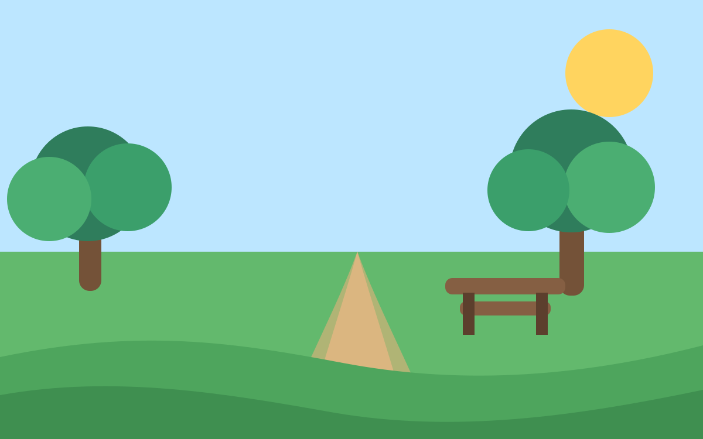
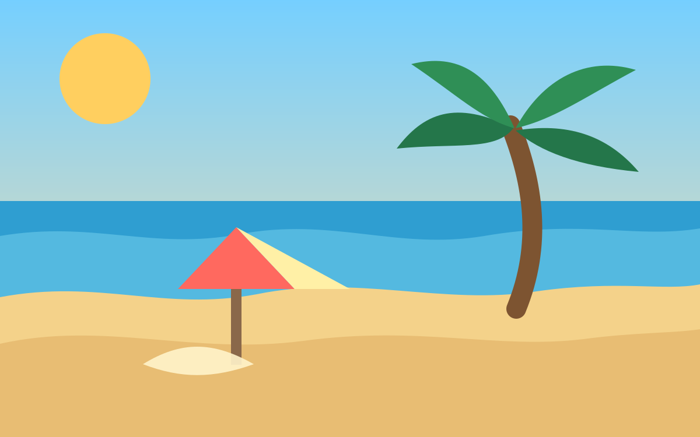

Góry
Szczyt Błękitnego Wiatru
Spokojna góra z szerokim widokiem na dolinę. Idealne miejsce na pieszą wycieczkę i robienie zdjęć o poranku.
- piękne widoki
- cisza i świeże powietrze
- szlak dla początkujących
Mini strona HTML + CSS
To prosta strona z trzema fikcyjnymi miejscami. Możesz podmienić zdjęcia, tytuły i opisy na własne.
Każda karta ma obrazek, nazwę miejsca, krótki opis i listę powodów, dlaczego warto tam pojechać.
Góry
Spokojna góra z szerokim widokiem na dolinę. Idealne miejsce na pieszą wycieczkę i robienie zdjęć o poranku.

Park
Duży park z alejkami, stawem i drewnianymi ławkami. Można tu odpocząć, poczytać książkę albo urządzić rodzinny piknik.

Plaża
Jasna plaża z ciepłym piaskiem i spokojną wodą. Dobre miejsce na odpoczynek, budowanie zamków z piasku i oglądanie zachodu słońca.
Otwórz plik index.html i zmień teksty w kartach. Obrazki możesz podmienić w folderze images.